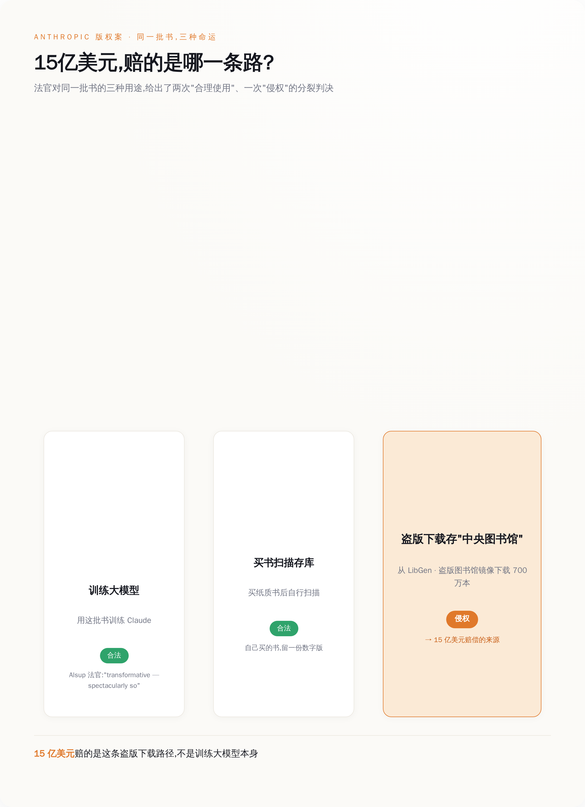
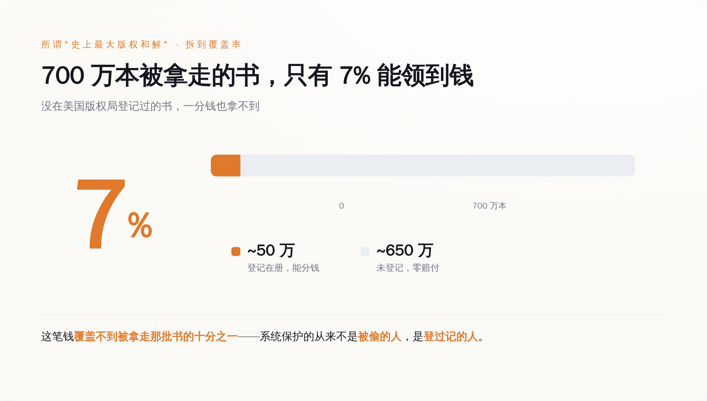

一、15 亿到底买的是什么单
先把两件事分开。这是整个案子最要命、也最少人讲清的地方。
Bartz 诉 Anthropic，2024 年立案，原告是三个写书的：小说家 Andrea Bartz、写非虚构的 Charles Graeber，还有《The Feather Thief》的作者 Kirk Wallace Johnson。他们告的核心就一句话：你没经我同意，拿我的书训练了你的 AI。
2025 年 6 月 23 日，主审的 William Alsup 法官出了一份判决。这份判决拆成三瓣，瓣瓣都值钱：
第一瓣，拿书去训练大模型，是合理使用。原话是「transformative — spectacularly so」，转化性的，而且转化得惊人。说白了，AI 读你的书学写作，跟盗印你的书去卖，是两码事，前者不算侵权。
第二瓣，Anthropic 后来花钱买了几百万本纸质书，拆开、裁边、逐页扫描成电子版存进自己库里——这个动作，法院也判它是合理使用。你买的书，你想怎么数字化是你的事。
第三瓣，问题出在这儿：Anthropic 早期图省事，直接从 LibGen 和 Pirate Library Mirror 这两个盗版书库，下载了七百多万本书，攒成一个「中央图书馆」。这一下载，Alsup 判它不是合理使用，还甩了个定性——「Napster 式的下载」。

看明白了吗。同样一本书，Anthropic 拿去训练 AI，法院说没事；买来扫描，法院说没事；从盗版站下下来存着，法院说这个要命。
所以这 15 亿，赔的从来不是「训练了 AI」。赔的是它当年为省几个买书钱，去盗版站薅了七百万本。AI 学没学你的书，法律不管；Anthropic 有没有花钱买书，法律要命。
讲白了，这是一张「没买书」的罚单。
二、为什么非赔不可：15 万一本的枪口顶在脑门上
有人会问，不就盗了几本书，至于赔 15 亿吗。
至于。
美国版权法里有个东西叫法定赔偿——只要作品登记在案，权利人不用证明自己实际亏了多少，直接按「每部作品」要钱，故意侵权的，最高每部 15 万美元。
你把 15 万，乘以数百万本盗版书，自己算算那是个什么量级。Anthropic 自己在庭上估过，理论上的赔偿敞口是几百亿美元起步，往上不封顶。这不是罚款，这是能把一家公司直接抬走的数字。
Alsup 本来把「盗版」这一瓣的庭审排在了 2025 年 12 月 1 日，交给陪审团去定 Anthropic 到底赔多少。一边是几百亿的敞口，一边是陪审团这种谁也说不准的东西。Anthropic 没赌，2025 年 9 月 5 日，开庭前抢先和解，掏 15 亿了事。
15 亿听着吓人，可你把它摊到具体的书上：约 50 万部符合条件的作品，每部大概 3000 美元。
正版买一本书多少钱，二三十美元。盗版被逮住，一本赔 3000。
这哪是什么版权赔偿，这就是一张顶格开出的超速罚单——你抄了近道，被拍下来了，一本一本地补票，外加罚金。早知今日，当初老老实实按标价买书，省下的这 15 亿够买回一整座图书馆还有富余。
三、「史上最大」这四个字，水分不小
媒体标题都在喊「美国史上最大版权和解」。数字是真的，但有一层没人愿意细说的东西。
Anthropic 从盗版站下了七百多万本书。最后能进这场和解、能分到钱的，只有约 50 万本。
七百万分之五十万。剩下那六百五十多万本呢？一分钱拿不到。
原因不复杂，也很冷酷：想分钱，你的书必须在美国版权局登记过——有正经的出版编号，而且得在 Anthropic 下载之前、或者首次出版后三个月内就完成登记。没登记，你的书就算实打实被人从盗版站薅走了，也不在这份「史上最大和解」的名单上。

所以所谓「史上最大」，赔付覆盖的其实不到被拿走那批书的十分之一。已登记的那 50 万本里，据作家协会（Authors Guild）的数据，91.3% 被人认领了钱；剩下那六百多万本的作者，连桌子都上不了。
系统保护的从来不是「被偷的人」，是「填过表、登过记的人」。 这话冷，但这就是版权法运转的方式。四、认怂，但一个字没认错
和解归和解，Anthropic 的姿态值得玩味。
它的副总法律顾问 Aparna 的官方回应，一个字都没提「我们错了」。她说的是：我们 2025 年就和解了，那是在法院作出里程碑式裁决——用书训练 AI 属于合理使用——之后；那条，至今仍是法律。
这话的意思是：训练那一仗，我们赢了；这 15 亿只是买盗版留下的旧账，跟我们的 AI 合不合法没关系。
和解条款里还有一条硬的：最终判决下达后 30 天内，Anthropic 必须销毁那批从 LibGen 和 Pirate Library Mirror 下来的原始文件以及一切衍生副本，并书面认证销毁完毕。盗版库，物理意义上得没。
还得记一笔：这是一份和解，不是判决，不构成任何有约束力的先例。法院并没有替整个行业盖章说「训练 AI 就是合理使用」——那只是 Alsup 一个人在一个案子里的意见。别的官司照打。就在这次终审前六天，7 月 14 日，一批出版商刚把 Google 告了，理由是 Gemini 拿他们的书训练。
真正该被这 15 亿吓一跳的，不是 Anthropic 一家，是所有在搭模型的公司。
因为这案子把话说得再清楚不过：让你倾家荡产的，大概率不是「你训练了什么」，而是「你的数据是怎么来的」。训练这一仗，Anthropic 帮全行业赢了；它自己却栽在最不起眼的地方——当年图省事，没花钱买书。
模型不是护城河。一条干净的、每一本书都拿得出发票的数据供应链，才是。买书。留好凭证。就这。